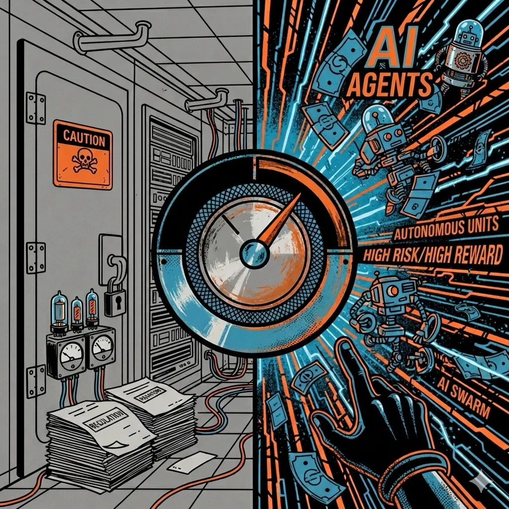

Four Things Friday
The Security Versus Productivity Dial: Turn It Up To 11

This week I’ve mostly been thinking about the tension between productivity and security, and whether the conventional wisdom about regulation as a moat in AI has it backwards.
The narrative is thus: regulation slows AI adoption. If you have to think about HIPAA compliance, GDPR, and data sovereignty before deploying your swarm of agents, you’ll move more cautiously. And caution means slower adoption, which means smaller productivity gains. That’s the regulatory moat thesis. Compliance overhead protects incumbents and penalises speed. I dunno man. Two stories this week complicate the picture.
Item 1: the first AI agent supply chain attack just happened in the wild. Every wave of new technology opens new attack vectors — email gave us phishing, BYOD gave us shadow IT, cloud storage gave us sensitive documents in personal Dropbox accounts. AI coding agents have now given us prompt injection as a live supply chain weapon.
Item 2: a CEPR study of 12,000 European firms finds a 4% productivity boost from AI adoption — but the gains accrue to firms that invest in training and infrastructure, not those that hand developers a tool and hope for the best.
The gains from moving fast are going to be too vast to ignore. There is always a risk dial. A little more risk here, a little less there. But the productivity gains from going full risk-on could end up so great that those being cautious get left behind, probably permanently. I am all in on velocity, I think to win in the next 2 years you will have to accept some degree of risk. Some libraries will have malware. Some credentials will be leaked. You vibe-coded website will fall down because you used Prisma for your database and you don’t really know what Postgres is. But, also like, you got Claude to make you a new invoicing app because Xero sucks. So..
LFG.
1. The First AI Agent Supply Chain Attack Just Happened
On 17 February, a compromised npm token (npm is the package manager that most JavaScript developers use to install software libraries) was used to publish a rogue version of Cline, a popular open-source AI coding agent with ~90,000 weekly downloads. The attacker modified one file to silently install OpenClaw — a controversial AI agent — on every developer’s machine. It sat live on the registry for eight hours before anyone noticed.
The attack chained together a prompt injection (tricking an AI into following hidden instructions) in Cline’s AI-powered issue triage workflow with GitHub Actions cache poisoning (corrupting the automated build system) to steal the credentials needed to publish official software updates. In other words, the attacker used an AI agent’s own helpfulness against it to compromise the software supply chain. Security researcher Adnan Khan had warned Cline about the vulnerability six weeks earlier. Meanwhile, security firm Snyk scanned OpenClaw’s marketplace for third-party agent skills and found 7.1% contained credential-leaking flaws. Meta told employees to keep OpenClaw off work laptops or face termination.
The BYOD parallel is relevant. Around 2010, employees started bringing iPhones to work and IT had a choice: ban them or build policies. Very few were keen to do BYOD. Same thing now with AI coding agents, developers adopting them bottom-up, without security review, because they make people faster. But unlike a phone, an AI coding agent has write access to your codebase, your build pipeline, and your software publishing credentials. When something goes wrong, it’s gonna go very wrong. Every dev team needs an AI agent security policy. For me, read only, no write access as of today. But like, the occasional write to Attio can’t hurt, can it? Can it?
2. AI Boosts EU Productivity by 4%, But Only If You’re Already Winning
A CEPR study of 12,000+ European firms finds AI adoption increases labour productivity by 4% on average, with no evidence of reduced employment in the short run. But the gains are wildly uneven. Large enterprises show 45% AI adoption; mid-size firms 33%
Each extra 1% spent on workforce training apparently amplifies AI’s productivity effect by 5.9%. Each extra 1% of software-and-data investment lifts it by 2.4%. AI rewards firms already investing in people and technology. Everyone else gets left further behind. I don’t really know how to teach someone to use Claude Code. Isn’t the teaching: “ask claude to teach you” What is the human in the loop doing here?
Sceptics will say 4% is hardly revolutionary. Fair. And “no evidence of reduced employment” likely reflects early-adoption phase; displacement 100% will lag. But the distributional finding is interesting. It’s further evidence of the Superstar Economy and if AI widens the productivity gap between large and small firms (it will), then a few firms and employees are going to get disproportionately richer.
3. Mistral Buys Koyeb, Then Warns “We Are At Risk”
On Tuesday, Mistral sealed its first-ever acquisition — Koyeb, a Paris-based serverless cloud startup founded by three ex-Scaleway engineers. The 13-person team brings inference optimisation, GPU management, and sandboxed environments for running AI agents safely. Mistral’s also announced €1.2bn in Swedish data centres and claims $400m+ ARR.
Then on Thursday, CEO Arthur Mensch told the India AI Impact Summit that Europe is “at risk” from US dominance in AI. At the same event, Sam Altman and Dario Amodei conspicuously refused to join hands when Modi prompted all speakers to raise them in unity.
With the previous ASML investment, it’s time to stand back. This is our full-stack AI cloud play now guys. Stare it in the face. This is our OpenAI.
As I’ve written before, the stack isn’t just chips. It’s silicon to cloud to model to deployment. We lost DeepMind to Google, at least we aren’t surrendering our last remaining model company.
4. AlphaGo Creator Raises $1bn for London “Superhuman Intelligence” Lab
And finally, on that “last remaining model company” note. David Silver — former DeepMind scientist behind AlphaGo and much of the foundational reinforcement learning work underpinning modern AI — is reportedly raising $1bn for his startup, Ineffable Intelligence. Sequoia leading, NVIDIA/Google/Microsoft considering. Valued at ~$4bn. If completed, the largest seed-stage raise for a European AI company. By a long way.
The mission is somewhat vague: “superhuman intelligence.” No product. No revenue. Just the name, the track record, and a billion dollars. Good stuff. But the signal is strong with this one. If Silver can raise $1bn in London, not SF, then maybe we have a shot. But I mean would be nicer for the narrative if it wasn’t Sequoia a US fund leading this one wouldn’t it. Combined with Mistral’s moves, Wayve, Synthesia, ElevenLabs, Isomorphic Labs, Callosum, and the broader sovereign AI thesis, this starts to feel like Europe is beginning to play the game properly. Or at least, the week the fundraising numbers stopped being embarrassing.
And before you go, my colleagues Elad Verbin and Eyal Baroz of Lunar Ventures fame, published a request-for-startups on teleoperation for robotics. $10bn poured into robotics last year, almost nothing into the teleop stack that produces the training data.
“Here’s a fact that should get way more attention: when you watch a humanoid robot demo, you’re probably watching a teleoperated robot. The rule of thumb: “If a humanoid demo is not explicitly advertised as autonomous — one should assume it’s tele-ops.”
Must read imo, and they’re writing cheques (€500K–€1.5M pre-seed).
Bub bye.